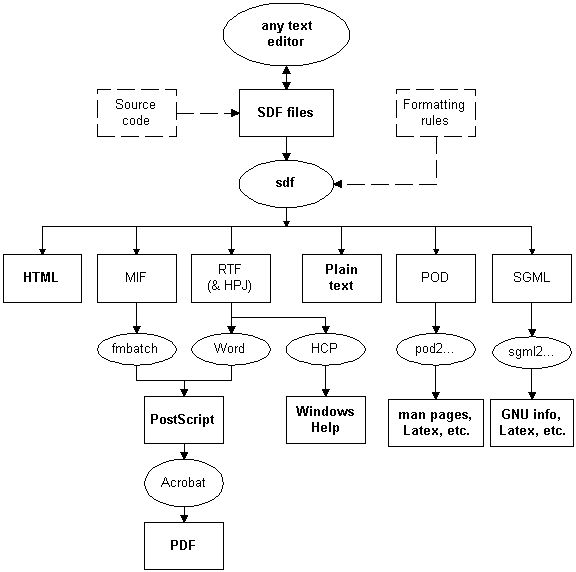

SDF (Simple Document Format) is a freely available document development system which generates high quality outputs in a variety of formats from a single source. The output formats supported include HTML, PostScript, PDF, man pages, POD, LaTeX, SGML, MIF, RTF, Windows help and plain text.
SDF documents are simple to create and maintain, minimising the time spent on documentation. In particular, SDF directly supports the creation and maintenance of large, on-line documentation systems (including intranets) via centralised hypertext management and rule-based hypertext generation.
SDF has been completely developed in Perl, a popular and highly portable scripting language. Like Perl, SDF is freely available for commercial and non-commercial use.
SDF is a document publishing system which aims to solve some common problems that many software organisations encounter with documentation:
The basic design principles are:
The key feature of SDF is the division of responsibility:
SDF consists of the following key components:
Unlike SGML, XML, HTML and many other markup languages, the SDF language has been designed to be author-friendly, rather than parser-friendly. As a result, most SDF documents look quite similar to plain text email, making them easy-to-write and easy-to-read.
A sample SDF document is shown below:
# Build the title
!define DOC_NAME "GalaxyBuilder"
!define DOC_TYPE "Discussion Paper"
!define DOC_AUTHOR "Joe Bloggs"
!build_title
H1: Introduction
After extensive market research, I believe there is
an excellent opportunity for us to develop software
for the I<galaxy construction industry>. Potential
customers include:
* NASA
* European Community
* China
* Japan.
Note: The proposed name of the software package to be
developed is [[DOC_NAME]]. If you want to suggest a
better name, send email to {{EMAIL:joe@bloggs.com}}.
H2: Software Requirements
The key requirements are:
^ support for the design and simulation of galaxies
containing up to:
- 1000 large planets, or
- 5000 small planets
+ the package needs to be easy to use
+ the package needs to be well documented.
H2: Project Team
Exploding galaxies will be B<very> bad for business,
so we need the best team possible for this project:
!block table
Person Role
Mary Jones Project Manager
Hans Blass Architect
Bill Smith Software Engineer
!endblock
Comments begin with a # character as the first non-whitespace character on a line.
Macros are embedded commands which begin with a ! as the first non-whitespace character on a line. The define macro is used to set variables. The value of a variable can be embedded in paragraph text by using the [[...]] syntax.
The DOC_NAME and DOC_TYPE variables are used by the build_title macro which creates:
Paragraphs can be tagged in different ways. For the vast majority of SDF documents, the only tags used are:
| Tag | Meaning |
| H1: | level 1 heading |
| H2: | level 2 heading |
| * | item in level 1 bulleted list |
| - | item in level 2 bulleted list |
| ^ | first item in level 1 ordered list |
| + | next item in level 1 ordered list |
| > | fixed-width, verbatim text |
| Note: | note |
Phrases can also be tagged in several ways. Any phrase can be tagged using the syntax:
{{XYZ:...}}
where XYZ is the tag. For single, uppercase character tags like I (Italics) and B (Bold), POD-style syntax is also supported:
X<...>
where X is the tag.
Tables can be specified using the table filter, typically in combination with the block and endblock macros. The first row is the headings. Remaining rows are data.
The sdf command is used to convert SDF to other formats. The general syntax is:
sdf [options] file ...
If an extension is not given (and a file is not found with that name), an extension of sdf is assumed.
The most commonly used option is the -2 option. For example, to convert mydoc.sdf to HTML and PostScript, the respective commands are:
sdf -2html mydoc sdf -2ps mydoc
These commands create files called mydoc.html and mydoc.ps respectively.
To convert mydoc.sdf to a set of HTML topics, the command is:
sdf -2topics mydoc
This creates the following files:
By default, topics are created whenever a level 1 heading is encountered or a file is explicitly included. The -n option can be used to specify a different level for splitting into topics, e.g.
sdf -2topics -n2 mydoc
SDF requires the following:
The architecture of SDF is given in the diagram below.

WYSIWYG (What-You-See-Is-What-You-Get) tools are great for creating small to medium-sized:
However, the WYSIWYG approach is inefficient when it comes to creating and maintaining large documentation systems, particularly if you want high quality paper-based and on-line outputs.
The reasons are:
Nevertheless, WYSIWYG tools are often used in combination with SDF when they save time. For example, diagrams can be created in most packages and imported into SDF documents.
The SGML/XML approach of specifying documents semantically is an extremely powerful one and SDF uses the same approach whenever possible. However, as SDF does not use document structure rules and DTDs, it is much simpler than SGML. SDF is also more readable than SGML, so high-cost authoring tools are not needed on every desktop, making SDF much cheaper to implement than SGML.
Like SDF, XML has built on SGML's good ideas but minimised the overall complexity. However, XML has retained SGML's unfriendly appearance.
In many ways, the system closest to SDF is POD (Plain Old Documentation) which is widely used in the Perl community. Like SDF, POD:
Currently, SDF has several advantages over POD:
Furthermore, versions 2.000beta10 and later of SDF are POD friendly:
As a result, POD users can use SDF or migrate to SDF when POD isn't powerful enough. Refer to SDF for POD Users for further details.
The basic concepts within SDF documents are:
| Concept | Description |
| paragraph | one or more lines of text |
| phrase | a section of text within a paragraph |
| style | the type of a document, paragraph, phrase or table (e.g. H1) |
| macro | a command embedded in a document (e.g. !define) |
| variable | a named value (e.g. DOC_NAME) |
| filter | a rule to use when processing certain sections of text (e.g. table) |
| attribute | a named parameter of a paragraph, phrase or filter (e.g. jump) |
| expression | a literal or expression to evaluate (e.g. "Ian Clatworthy"). |
Further details about these are given below.
Paragraphs have the following format:
line1 ... lineN
Leading and trailing whitespace on lines is generally ignored. Paragraphs are separated by:
For normal paragraphs, simply specify the text on one or more lines. For example:
I like products which are simple to use and do what I expect. We should encourage engineers to design more products with these qualities.
A paragraph can be given a style using the following syntax:
style":"line1 ... lineN
Some commonly-used paragraph styles are:
| Style | Description |
| N | normal paragraph (the default) |
| H1 .. H6 | chapter heading at level 1-6 |
| A1 .. A6 | appendix heading at level 1-6 |
| P1 .. P6 | plain heading at level 1-6 |
| Note | a single paragraph note |
| E | fixed-width (example) text |
For example:
Note: Life is too short to drink bad wine.
The result is:
For certain styles, the following syntax is also supported:
special_style line1 ... lineN
The special styles available are:
| Style | Description |
| > | fixed-width, verbatim paragraph |
| . .. ...... | paragraph or plain list item at level 1-6 |
| * .. ****** | unordered list at level 1-6 |
| - .. ----- | unordered list at level 2-6 |
| & .. &&&&&& | enumerated list at level 1-6 |
| ^ .. ^^^^^^ | first entry in an ordered list at level 1-6 |
| + .. ++++++ | next entry in an ordered list at level 1-6 |
For example:
^ fruits: - peach - banana + vegetables: - potato - carrots.
The result is:
A phrase is a section of text within a paragraph enclosed in the symbols {{ and }}. Like paragraphs, phrases are optionally tagged with a style.
The commonly-used phrase styles are:
| Tag | Description | Sample Output |
| Emphasis: | ||
| 1 | 1st level emphasis (default) | emphasis 1 |
| 2 | 2nd level emphasis | emphasis 2 |
| 3 | 3rd level emphasis | emphasis 3 |
| Formatting: | ||
| N | normal | some normal text |
| I | italic | some italic text |
| B | bold | some bold text |
| U | underline | some underline text |
| EX | example | some example text |
| Types: | ||
| email address | ianc@mincom.com | |
| F (or FILE) | Filename | myfile.sdf |
| SECT | Section | Paragraphs |
| URL | Uniform Resource Locator | http://www.mincom.com |
| Classes: | ||
| DOC | document title | SDF User Guide |
| REF | reference (document code) | MTR-SDF-0002 |
| ORG | organisation | Mincom |
| PRD | product | MIMS |
| Specials: | ||
| E (or CHAR) | escape (i.e. special character) | © |
| S | spaces are non-breaking | section 2.1 |
| IMPORT | name of a figure to import |
For single character, uppercase phrase styles, POD's [A-Z]<..> syntax can be used. For example:
E: I<Please> reply to {{EMAIL:customer@xyz.com}} quickly.
The result is:
Please reply to customer@xyz.com quickly.
This example also illustrates the advantage of specifying documents in a logical manner:
A type (e.g. EMAIL) simply marks a phrase as a logical entity. Rules may be defined for processing (e.g. generating hypertext) for these types. Refer to Rule-based Hypertext Generation, later.
A class (e.g. DOC) is a special kind of type where the entity must be a member of a predefined set. As a result, SDF can validate the entry name, lookup a hypertext jump and do other clever things (like replace the text with a longer name).
Rules can also be defined for processing classes, although hypertext jumps are often defined for each entity in the tables which define the known entities. Refer to Centralised Hypertext Management, later.
Special phrases are used for entering things like:
A macro is a command which can be embedded within SDF. Macros begin with an exclamation mark (!) or equals sign (=) as the first non-whitespace character on a line. !-style macros terminate at the end of the line, unless explicitly continued using a backslash character at the end of the line. =-style macros terminate at the next blank line (ala POD).
Some examples are:
!define DOC_NAME "The SDF Document Development System" !define DOC_AUTHOR "Ian Clatworthy" !build_title
Some commonly-used macros are:
| Macro | Description |
| init variables | initialise variables |
| define variable [expression] | set a variable's value |
| build_title | build a title page |
| block filter | begin a block of text |
| endblock | end a block of text |
| include file[; filter] | include another file |
| import file[; parameters] | import a figure |
A variable is a named value. Document-wide settings are controlled in SDF using variables. Likewise, authors can define and access their own variables. In either case, the value of a variable can be referenced in a paragraph by delimiting it with the special symbols [[ and ]].
For example:
!define MY_EMAIL 'abc@xyz.com' My electronic mail address is [[MY_EMAIL]].
The result is:
My electronic mail address is abc@xyz.com.
Some commonly used system variables are:
| Variable | Description |
| DOC_NAME | the title, excluding the type (e.g. SDF) |
| DOC_TYPE | the title type (e.g. User Guide) |
| DOC_AUTHOR | the author |
| DOC_TOC | the number of heading levels in the table of contents |
| DOC_START | the time processing of the document started |
The define macro is usually used to set variables. However, variables beginning with OPT_ need to be set before processing of the document begins. The init macro is used on the top line of a document to set these variables. For example:
!init OPT_STYLE="manual"
As the value of date-time variables is the number of seconds since January 1, 1970, a format is typically applied to them when they are embedded in text. For example:
The date is [[DATE:DOC_START]].
The predefined formats available include:
| Format | Description |
| FULL | complete date-time format |
| TIME | time only |
| DATE | date only |
| CONCISE | concise date only |
| YEAR | 4-digit year |
New formats can be created and the definitions of existing formats can be changed. Furthermore, a format can be applied to any variable (or embedded Perl expression), although the date-time formats are obviously only useful when applied to date-time values.
The general type of an document can be controlled by either:
The available document styles include:
| Style | Purpose |
| General: | |
| document | a normal document |
| manual | a manual |
| paper | a technical paper |
| Administration: | |
| fax | a facsimile |
| memo | a memorandum |
| minutes | minutes of a meeting |
It is relatively simple to create new document styles by inheriting details from an existing one.
A filter controls how a block of text is interpreted. The text is usually delimited by block and endblock macros.
For example, tables are usually defined via the table filter:
!block table Option Description -h display help -o specify the output extension !endblock
The result is:
| Option | Description |
| -h | display help |
| -o | specify the output extension |
Other macros also support filters. These include:
Some of the commonly-used filters are:
| Filter | Description |
| table | the lines are a table in SDF's TBL format |
| example | the lines are example paragraphs |
| title | used to build a title block for memos, faxes, etc. |
| topics | include files as sub-topics |
| appendix | replace H1 styles with A1, etc. |
| plain | replace H1 styles with P1, etc. |
For example, the following macro includes another SDF file and formats it as an appendix:
!include "tips.sdf"; appendix
Paragraphs and phrases can be given attributes via the syntax:
style"["attributes"]" text
where the syntax of attributes is:
name1["="expression1]";" name2["="expression2] ...
Attributes are used for specifying custom formatting, hypertext targets and jumps, indexing information, etc.
Some commonly used attributes are:
| Name | Purpose |
| Paragraphs: | |
| align | Left, Right, Center, or Full (i.e. justified) |
| notoc | take this heading out of the table of contents |
| Phrases: | |
| family | font family |
| size | font size |
| id | hypertext target tag |
| jump | URL (Uniform Resource Locator) to jump to |
For convenience, phrase attributes can be applied to paragraphs.
For example:
N[align=Center;size='12pt'] Life is too short to drink bad wine.
The result is:
Life is too short to drink bad wine.
SDF has a generic object management feature which enables:
For example, a configuration file may have the following declaration of products:
!block products; data Name Jump SDF http://www.mincom.com/mtr/sdf/ MIMS http://www.mincom.com/mims/ !endblock
If an object with a Jump attribute is specified in a document, SDF will automatically include a hypertext jump to the appropriate place. For example, the objects above could be specified in a document like this (PRD is the style used to specify a product object):
The user documentation for {{PRD:MIMS}} is now
produced using {{PRD:SDF}}.
SDF has built-in support for the following classes of objects:
Additional classes of objects can be easily added, so workgroups can centrally manage all sorts of URLs: mail addresses, FTP sites and so on.
SDF provides a generic, rule-based feature called event processing for automating tasks like hypertext generation, index generation and custom formatting.
The on macro allows you to execute an arbitrary piece of Perl code when an event occurs during document conversion. Its syntax is:
!on type pattern; [id]; action
where:
The types supported and the Perl symbols available in the respective actions include:
| Type | Symbols |
| paragraph | $style, $text, %attr, &ParaPrepend, &ParaAppend |
| phrase | $style, $text, %attr |
| macro | $name, $args |
| filter | $name, $params |
| table | $style, %param |
Some examples are:
# Make every heading a hypertext target named itself
!on paragraph 'H\d';; $attr{'id'} = $text
# If the target is HTML, add a line above level 1 headings
!if $var{'OPT_TARGET'} eq 'html'
!on paragraph 'H1';; &PrependText("Line:")
!endif
As systems built by embedding scripts within HTML are typically easier to customise than systems build by generating HTML from scripts, embedded scripting is now a well established web-publishing solution.
Likewise, Perl embedded in SDF can be a powerful combination providing this same flexibility with some additional benefits:
To embed a block of Perl code, the script filter is used. For example:
!block script
for $i ('a' .. 'z') {
print "$i";
}
!endblock
To embed an expression within paragraph text, the [[..]] syntax is used. For example:
Hello [["wor" . "ld"]]
For single line scripts, the script macro can be used. For example:
!script $next_version = $var{'VERSION'} + 1
As shown above, SDF variables are available within Perl expressions via the var associative array.
As HTML is constantly evolving and contains features which SDF doesn't explicitly support (e.g. frames), it is occasionally necessary to directly embed native HTML. To do this, use the inline filter. For example:
!block inline
<P>
My name is <B>Bill</B>.
!endblock
Inlined HTML is ignored when PostScript is being generated. Likewise, if text for another format is inlined (by using the target parameter to the inline filter, say), it is ignored when HTML is generated.
If you want to use embedded expressions (enclosed in [[ and ]]) and macros within the inline text, add the expand parameter like this:
# If the SHOW_DATE variable is true, show the date, otherwise the time
!block inline; expand
!if SHOW_DATE
<P>
The date is [[DATE:DOC_START]].
!else
<P>
The time is [[TIME:DOC_START]].
!endif
!endblock
Likewise, you can use the INLINE phrase style within a paragraph to embed HTML within a paragraph. For example:
My name is {{INLINE:<B>Bill</B>}}.
SDF supports a number of special features which collectively make it useful for building large documentation systems like intranets and software manuals.
These features are:
| Feature | Description |
| Modules and Libraries | an extensible way of packaging and reusing configuration information |
| Reusable Topics | topics can be defined without needing to know how they are used |
| Conditional Text | inclusion and exclusion of certain text |
| Extracting Documentation | extraction of documentation embedded in source code |
| Programming Language Support | attractive formatting of source code |
| Multiple Looks | packaged document-wide presentation styles |
Further details about these are given below.
A module is a normal SDF document which contains reusable information. As SDF has an open architecture, a module can provide:
A library is a directory containing modules with a common theme. Importantly, a library can inherit information from other libraries, making it easy to:
Documentation systems can be developed as a set of topics, where each topic uses H-style headings, starting at H1. A topic does not generally need to know how it will be used - each document including a given topic can:
For example:
!include "types.sdf" H1: Subroutines !block topics Topic create delete update !endblock !include "errors.sdf"; appendix
In this example, the results are:
Sections of text can be conditionally included or excluded using the following macros:
!if condition !elsif condition !else !endif
These macros allow you to tune the output for different audiences and different target formats.
Software documentation can be embedded within comments in source code (and text-based data files) and extracted by the sdfget utility. The name, order and formatting of extracted sections can be controlled via report files.
Consider the following scenarios:
Creating the necessary reports and mapping the extraction commands to SDF macros is relatively easy.
Blocks of source code can be nicely formatted via the lang parameter to the example filter. For example:
!block example; lang='Perl'
sub hello {
local($planet) = @_;
# Output a nice message
print "hello $planet!\n";
}
!endblock
If SDF encounters an unknown filter which is defined as a programming language, the example filter is implicit. Therefore, the above example can be simplified to:
!block Perl
sub hello {
local($planet) = @_;
# Output a nice message
print "hello $planet!\n";
}
!endblock
In either case, the result is:
sub hello {
local($planet) = @_;
# Output a nice message
print "hello $planet!\n";
}
There is built-in support for numerous languages, including Perl, C, C++, Java, Delphi and CORBA IDL. New language definitions can be easily added (
Pretty printing of source code is directly supported by sdf's -P option. For example:
sdf -2ps -Psh myscript sdf -2ps -P myapp.c sdf -2ps -P -N5 mylib.pl
The language to use can be specified as a parameter. The default language is derived from the extension of the file. The -N option adds line numbers at the frequency given.
The overall appearance of an document can be controlled by either:
The available looks include:
It is relatively simple to create new looks by inheriting details from an existing one.
The common reasons for using SDF are:
As SDF can be used to specify a logical definition of a document, it is reasonably good at maintaining quality across the different output formats it supports.
SDF often saves time in a number of ways:
SDF documents are plain text files which can be created on any platform. The underlying technology is Perl, a highly portable scripting language available on all commonly used platforms.
SDF is freely available for commercial and non-commercial use. However, like most software packages, there are costs to be considered when using SDF. These include:
For POD documents, SDF contains a
For other formats, the easiest way to convert existing documents is usually to convert them to plain text and add the necessary markup. For Word users, an RTF-to-SDF converter is available.
In any case, remember that:
Therefore, regardless of what conversion tools you use, expect to do some manual changes.
The SDF home page URL is http://www.mincom.com/mtr/sdf. From the home page, you can:
SDF is also available using anonymous ftp. The URL of the base directory is ftp://ftp.mincom.com/pub/mtr/sdf. The latest release is available in a variety of formats.
The following mailing lists are available:
To subscribe to these lists, send email to sdf-users-request@mincom.com and/or sdf-bugs-request@mincom.com for instructions on using factotum, the majordomo variant that manages these lists. In short, send email to factotum@mincom.com with a message body of subscribe sdf-users or subscribe sdf-bugs.
By using a logical document approach, where content and formatting are largely separated, SDF delivers high-quality Web-based and paper documentation from a single source. Importantly, the SDF language is easier for (most!) humans to read and write than alternatives like SGML or XML.
In addition, SDF lowers the cost of document production by providing a number of features for managing large documentation systems. These features include:
If all else fails, Perl scripts can be directly embedded in SDF documents to generate the output required!
Finally, as SDF is freely available to everyone, the costs associated with using SDF are relatively low.
Thanks to Tim Hudson (tjh@cryptsoft.com) for being SDF's biggest fan. Tim has assisted in design, fixed bugs, added features, promoted SDF to many of its current user base and generally helped with SDF whenever time permitted. Thanks also to Chris Moran (chris.moran@mincom.com) for maintaining the SDF Home Page, assisting in design, reviewing documents, etc. Many other Mincom colleagues have assisted with SDF, particularly David Cox and Craig Willis. Thanks to everyone involved.
Thanks also to my former Leeds and Northrup Australia colleagues, particularly Tom Beale, Craig Gibbings and Greg Birnie, for inspiring my initial interest in literate programming.
The initial version of the mif2rtf program is Copyright 1992 by Convex Computer Corporation, Richardson, Texas. (The full copyright notice and permission notice is included in the SDF distribution.)
FrameMaker, FrameViewer, Acrobat, PDF and PostScript are trademarks of Adobe Systems Incorporated.
Delphi is a trademark of Borland International, Incorporated.
Windows is a trademark of Microsoft Corporation.